3 Cohort Description
Let us check the distribution of our covariates:
table(recode(merged$sex, "0"="Male", "1"="Female"))##
## Female Male
## 181 282table(merged$medication)##
## crizotinib entrectinib
## 231 232We have more male than female individuals in our dataset (\(61\%\) vs \(39\%\)), while the two treatment groups have very similar size.
table(merged$ph.ecog)##
## 0 1 2 3
## 141 224 80 10ggplot(merged, aes(x=ph.ecog)) +
geom_bar(color = "white", fill = "blue") + theme_bw()## Warning: Removed 8 rows containing non-finite values (`stat_count()`).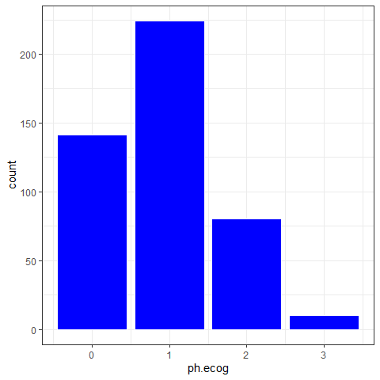
The vast majority of individuals have ECOG score between zero and two, with only \(10\) ECOG scores equal to three.
ggplot(merged, aes(x=ph.karno)) +
geom_histogram(bins = 10, color = "white", fill = "blue") + theme_bw()## Warning: Removed 2 rows containing non-finite values (`stat_bin()`).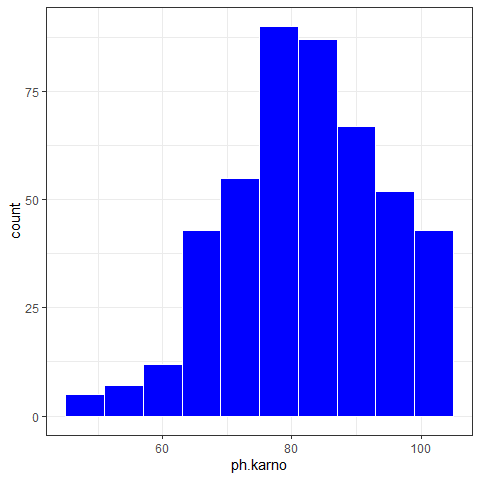
The Karnofsky score is always between \(45\) and \(100\), with the vast majority of scores above \(65\).
ggplot(merged, aes(x=wt.loss)) +
geom_histogram(bins=10, color = "white", fill = "blue") + theme_bw()## Warning: Removed 30 rows containing non-finite values (`stat_bin()`).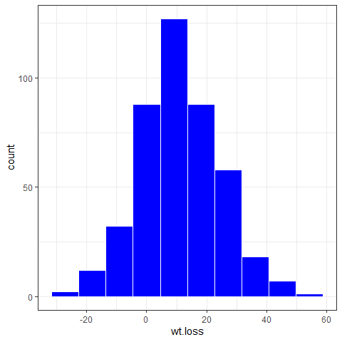
summary(merged$wt.loss)## Min. 1st Qu. Median Mean 3rd Qu. Max. NA's
## -28.980 1.968 10.542 10.918 19.756 52.350 30The weight loss covariate has a rather symmetrical distribution, with mean \(10.9\) and range \([-29, 52.4]\).
ggplot(merged, aes(x=age)) +
geom_histogram(bins=10, color = "white", fill = "blue") + theme_bw()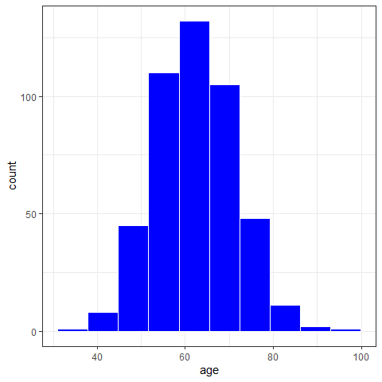
summary(merged$age)## Min. 1st Qu. Median Mean 3rd Qu. Max.
## 36.00 56.00 62.00 62.32 69.00 98.00The age covariate has a relatively symmetrical distribution, with mean \(62.37\) and range \([36,98]\).
table(merged$ph.ecog, recode(merged$event, "0" = "Censored", "1" = "Death"))##
## Censored Death
## 0 54 87
## 1 83 141
## 2 28 52
## 3 3 7subset(merged, !is.na(ph.ecog)) %>%
ggplot( aes(x=as.factor(ph.ecog), fill = as.factor(event))) +
geom_bar(position = "fill") +
labs(x = "ph.ecog") +
theme_bw()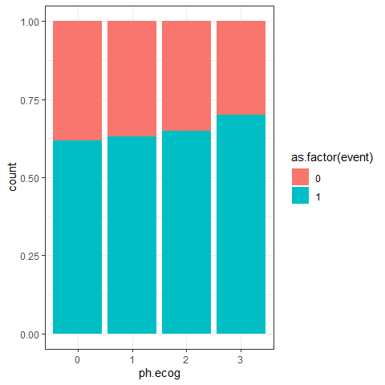
This table and plot suggest that higher values of the ECOG score are associated with higher percentages of deaths.
The plots below do not show a clear association between Karnofsky score/age/sex/wt.loss and the percentage of deaths observed.
subset(merged, !is.na(ph.karno)) %>%
ggplot(aes(x=cut(ph.karno,5), fill = as.factor(event))) +
geom_bar(position = "fill") +
labs(x = "ph.karno") +
theme_bw()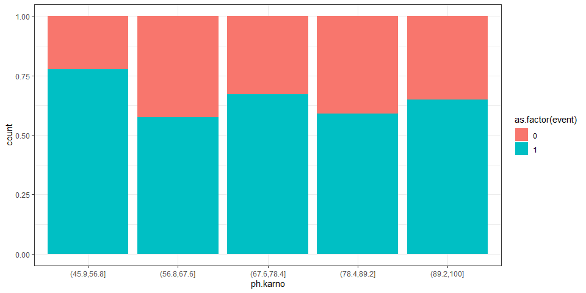
subset(merged, !is.na(age)) %>%
ggplot(aes(x=cut(age,5), fill = as.factor(event))) +
geom_bar(position = "fill") +
labs(x = "age") +
theme_bw()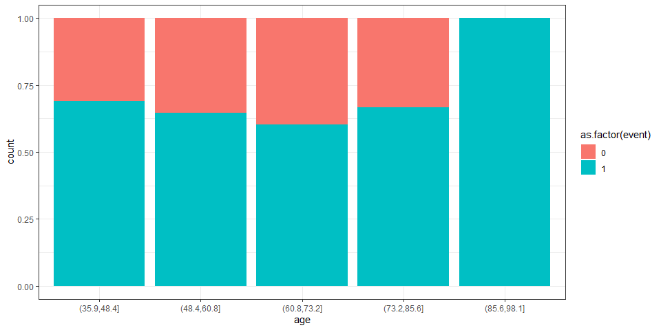
subset(merged, !is.na(sex)) %>%
ggplot(aes(x=sex, fill = as.factor(event))) +
geom_bar(position = "fill") +
labs(x = "sex") +
theme_bw()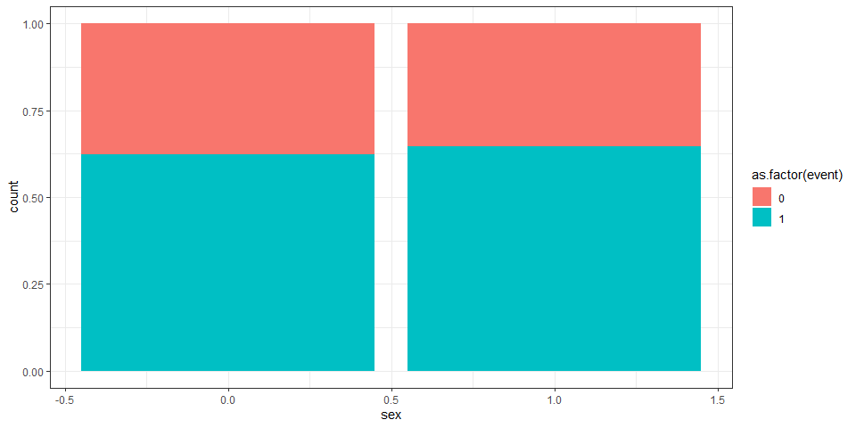
subset(merged, !is.na(wt.loss)) %>%
ggplot(aes(x=cut(wt.loss,5), fill = as.factor(event))) +
geom_bar(position = "fill") +
labs(x = "weight loss") +
theme_bw()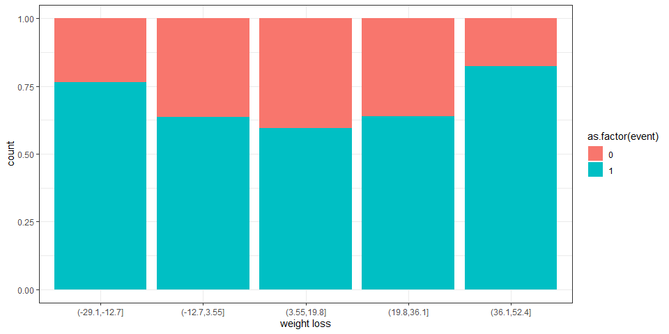
Finally let us produce a similar plot for the type of treatment:
subset(merged, !is.na(medication)) %>%
ggplot(aes(x=medication, fill = as.factor(event))) +
geom_bar(position = "fill")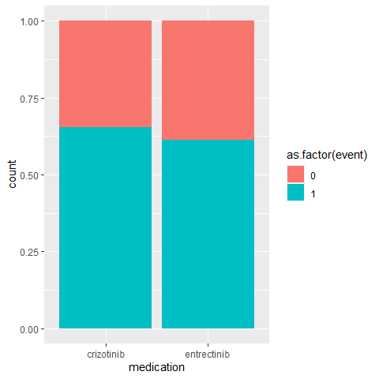
Here we see a (small) difference in percentage by treatment, with Entrectinib having a lower percentage of deaths. Our survival analysis will investigate if this difference is statistically significant.
We conclude this section by comparing the ECOG scores in the two treatment groups:
boxplot(merged$ph.ecog ~ merged$medication, xlab="", ylab="ph.ecog")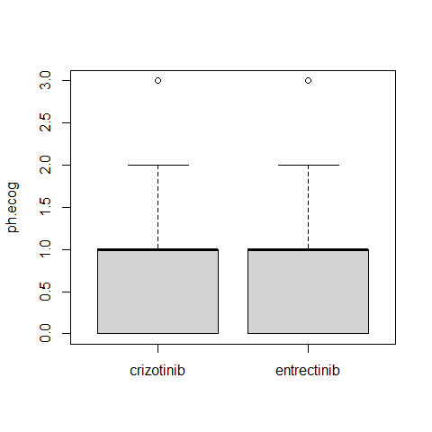
This distribution of the ECOG scores does not seem to change substantially between the two treatment groups.